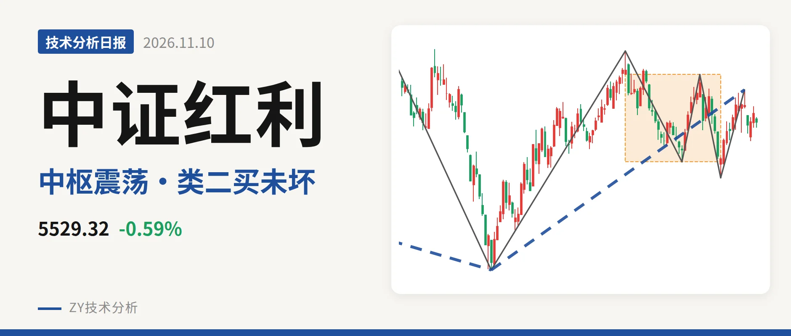

中证红利｜重回中枢内，5328点成短期锚

最近日线中枢 5386.04—5701.06点，收盘位于中枢之内
一句话：回落未成笔，日线上涨线段仍在延续，短期维持中枢震荡。
🧭 走势结构：日线上涨线段未结束，回落不成笔
当前日线仍处在6月30日以来的上涨线段里，该线段从4995.49点走到5646.01点，上涨约13%，还没有结束。更大级别上，2022年11月1日线段一买4541.71点之后，至今没有出现线段级别卖点，因此上涨结构仍在。日线线段中，2024年10月8日至2025年1月13日的下跌段、2025年1月13日至2025年7月23日的上涨段均已结束；6月30日的一买4995.49点截断了此前的回落。11月5日至11月10日只有4根K线，不构成一笔，所以当前仍属于上涨后的回落整理，而非新下跌段的确认。

📍 中枢与位置：收盘位于最近中枢内
最近一个日线笔中枢是9月1日至10月23日的 5386.04—5701.06点，尚未完成。最新收盘 5529.32点 落在中枢内，距下沿约143点，距上沿约172点，略低于中轴5543.55点。该中枢与2025年8月4日至今年4月30日的5518.46—5639.99点中枢有重叠，属于中枢扩展，中轴从5579点回落到5544点。价格重心没有明显离开这一箱体，仍在中枢延伸中。
🎯 买卖点：10月23日类二买未被破坏
最近三个日线笔买点分别为6月30日一买4995.49点、9月29日二买5386.04点、10月23日类二买5328.30点，所在下跌笔都已结束，因此不是暂定。11月4日之后价格既没突破5701.06点，也没跌破5328.30点，这些买点仍属于日线笔级别。当前没有新的笔级别卖点。11月5日以来的回落最低5460.31点，距5328.30点还有约132点；若后续跌破5328点，10月23日类二买才会被破坏。

⚖️ 背驰：下跌段新低不新弱
同向比较9月1日至9月29日与10月14日至10月23日两段日线下跌笔：前一段从5786.14点跌到5386.04点，绿柱面积561，DIF低点-32.7；后一段从5701.06点跌到5328.30点，价格创了新低，但绿柱面积仅53，DIF低点抬升至-20.4，构成 新低不新弱。这是10月23日类二买形成的主要动力。最新DIF为1.2，仍在零轴上方，日线动能未翻空；但10月23日至11月4日的上涨笔红柱面积只有65，DIF高点5.7，未能推动价格突破中枢上沿。
🔎 关键位置观察：5328点与5701点的结构含义
结构下沿看 5328点，中枢下沿看5386点，上方压力看 5701点 附近。若在5386—5701点之间整理，就是中枢延伸。若重新站上5701点，回落更可能只是中枢扩展，后续压力看5786点附近。若跌破5328点，10月23日类二买失效，调整级别扩大。综合看，最新价在箱体内、底背驰未被破坏，结构中性。
⚠️ 本文为基于公开行情数据的缠论技术结构记录，由程序自动计算并生成，仅供学习交流，不构成任何投资建议。市场有风险，投资需谨慎。